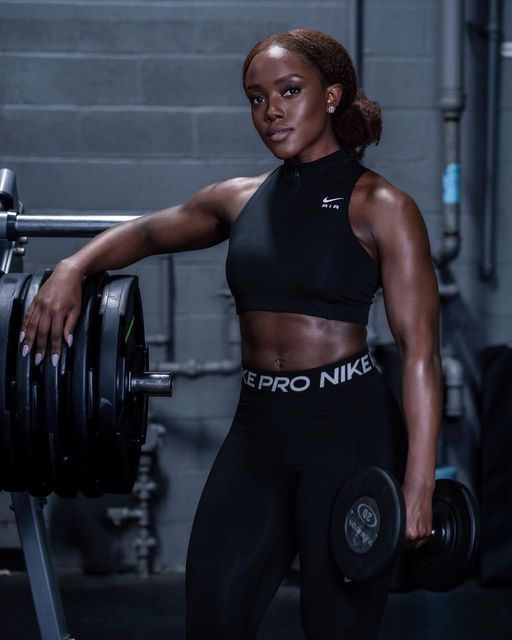

Kofi Mensah
Certifié STAPS, 8 ans d'expérience en salle. Kofi est spécialisé dans la prise de masse, la préparation physique et la correction de posture. Ancien compétiteur de powerlifting, il maîtrise parfaitement les techniques de force.

Adama Touré
CrossFit Level 2 certifié, champion régional 2021 et 2022. Adama adapte chaque entraînement à ton niveau tout en te poussant à dépasser tes limites. Spécialiste des mouvements olympiques et de la programmation CrossFit.

Aïssatou Bah
Certifiée 200h RYT (Yoga Alliance), Aïssatou guide chaque séance avec douceur et précision pour harmoniser corps et esprit. Elle enseigne le Hatha yoga, le Vinyasa et le Pilates avec une approche bienveillante et inclusive.

Ismaël Traoré
Ex-boxeur professionnel avec 15 combats et un palmarès impressionnant, Ismaël enseigne la boxe anglaise, le kick-boxing et la self-défense. Il transmet discipline, technique et mentalité de champion à chacun de ses élèves.